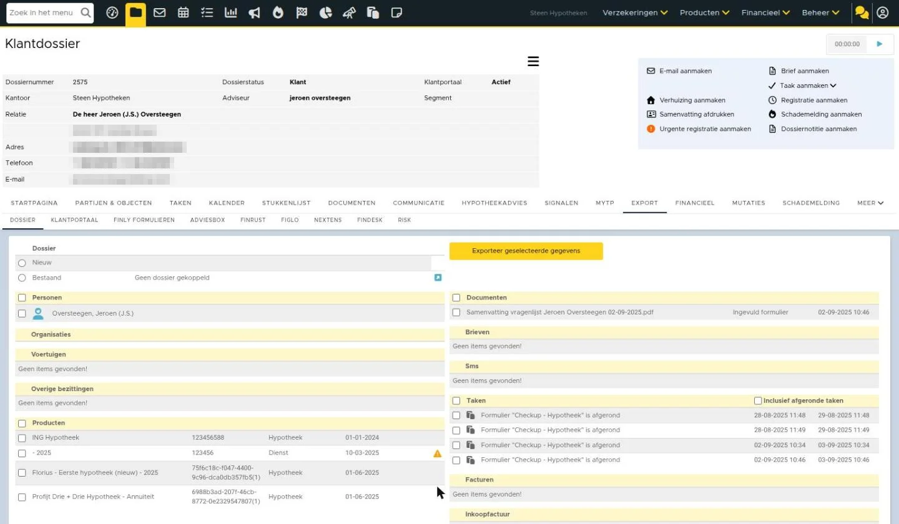
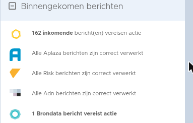

Figlo Hypotheken koppeling instellen en gebruiken
Als je voor een klant een hypotheek wilt berekenen en een adviesrapport wilt opstellen, doe je dit met adviessoftware, ofwel een adviespakket. Figlo Hypotheken is zo'n adviespakket dat is verbonden met eBlinqx, waardoor gegevens eenvoudig worden gedeeld.
De koppeling werkt twee kanten op. Als eerste verstuur je de klantgegevens van eBlinqx naar Figlo. Na de adviseringswerkzaamheden stuur je het advies weer naar eBlinqx. Vanuit eBlinqx vraag je de hypotheek aan via HDN.
Als de koppeling is ingericht in eBlinqx, volg je onderstaand stappenplan om gegevens heen en weer te sturen tussen eBlinqx en Figlo.
1. Voeg dossier toe aan Figlo
In het dossier ga je naar het tabblad Export. Als je nog niet eerder een klantdossier in eBlinqx naar Figlo hebt gestuurd, zie je in een klantdossier de knop 'Voeg dossier toe aan Figlo'. Klik op deze knop om een verbinding te leggen tussen het eBlinqx dossier en Figlo.
Als je gebruikt maakt van Ockto en je hebt in het dossier een brondata bestand ontvangen dan kan je eerst kiezen of je de gegevens van eBlinqx of van Ockto wilt gebruiken om vervolgens via de knop het dossier toe te voegen aan Figlo.
2. Stuur klantgegevens naar Figlo
Aan de rechterkant van het scherm vink je aan van welke personen je de gegevens naar Figlo wil exporteren. Nadat je de personen hebt geselecteerd, gebruik je de knop 'Geselecteerde item(s) bijwerken' om de gegevens van de personen naar Figlo Hypotheken (Figlo Advisor) of Figlo Start te sturen.
Als je dit eerder hebt gedaan, maar er sindsdien persoonsgegevens zijn gewijzigd in eBlinqx, gebruik je de knop 'Geselecteerde item(s) bijwerken' om de gegevens opnieuw naar Figlo te exporteren.
Klik vervolgens op één van de knoppen om Figlo Advisor of Figlo Start te openen.
3. Instellingen Figlo aanpassen
Wanneer je voor de eerste keer in Figlo Start komt nadat je een dossier uit eBlinqx hebt geëxporteerd, moet je gelijk de instellingen in Figlo aanpassen. Hiermee zorg je dat de verbinding tussen eBlinqx en Figlo altijd correct werkt. In eBlinqx moet de API hiervoor correct ingeregeld staan. Dit kan je niet zelf instellen, stuur hiervoor een e-mail naar support-eblinqx@blinqx.tech.
In Figlo Start stel je de koppeling met eBlinqx in via Externe koppeling - Instellingen adviseur - eBlinqx Connect:
De URL is de URL waarop je inlogt in eBlinqx De API Gebruikersnaam en API wachtwoord moeten wij aanleveren bij jou.
Voor informatie over de software van Figlo, bekijk de supportinformatie van Figlo of neem contact op met Figlo.
Lees hier het Figlo artikel over koppeling met eBlinqx
4. Maak berekening en stuur aanvraag naar eBlinqx
Wanneer je het hypotheekadvies in Figlo Hypotheken hebt afgerond, kom je in de 'Do' fase. Hier ga je naar de HDN berichtenmanager.
In het overzicht met offerteaanvragen, gebruik je de knop 'Versturen via eBlinqx Connect' om het de hypotheekaanvraag naar eBlinqx te sturen.
5. Verwerk aanvraag in eBlinqx
Je gaat nu de aanvraag verwerken in eBlinqx. Het AX bericht dat je zojuist vanuit Figlo Hypotheken hebt verstuurd, komt binnen in de HDN inbox op je eBlinqx dashboard.
Lees dit artikel om te weten hoe je een HDN bericht verwerkt.
Let op: Indien je gebruik maakt van Figlo via MijnGeldzaken dien je het HDN bericht handmatig te exporteren en importeren.
Gegevens die worden verstuurd naar Figlo
| Persoonsgegevens | Contactgegevens |
| Eerste persoon, partner, kinderen, voor- en achternaam, initialen, land, burgerservicenummer, verwachte levensdur, pensioendatum, opleidingsniveau, burgerlijke staat van eerste persoon | Telefoonnummer, e-mailadres, straat, huisnummer, plaatsnaam, provincie, land, postcode, geografische lengte en breedte |
AX-bericht uit Figlo handmatig uploaden
Komt de aanvraag uit Figlo niet automatisch in eBlinqx Connect binnen, dan kun je het HDN AX-bericht ook handmatig uploaden:
- Ga naar de HDN inbox en klik op de knop HDN-bericht uploaden.
- Kies bij het berichttype AX OfferteAanvraag. Welke berichttypes je kunt kiezen, hangt af van of je beheerder bent.
- Vul de gekleurde (verplichte) velden in: bij Bestand upload je het AX-bericht uit Figlo, de Schemaversie staat al ingevuld en bij Ontvangercode kies je de maatschappij. Dit is de lijst van maatschappijen die bij HDN bekend zijn; die staat los van de maatschappijen die in jouw omgeving zijn ingericht. De overige velden zijn optioneel.
- Klik op opslaan. Het bericht komt in de HDN inbox te staan. Zie je een oranje mapje voor het bericht, dan moet je het nog verder aanvullen.
Lees meer in HDN berichten handmatig uploaden.
Zo ziet het er nu uit in eBlinqx Connect

Afbeeldingen bij dit artikel
